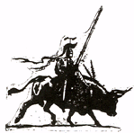

THE FIVE ORDERS OF DISCORDIA ("THEM")
Gen. Pandaemonium, Commanding
The seeds of the ORDERS OF DISCORDIA were planted by Greyface into his early disciples. They form the skeleton of the Aneristic Movement, which over emphasizes the Principle of Order and is antagonistic to the necessary compliment, the Principle of Disorder. The Orders are composed of persons all hung up on authority, security and control; i.e., they are blinded by the Aneristic Illusion. They do not know that they belong to Orders of Discordia. But we know.
1. The Military Order of THE KNIGHTS OF THE FIVE SIDED TEMPLE. This is for all the soldiers and bureaucrats of the world.
2. The Political Order of THE PARTY FOR WAR ON EVIL. This is reserved for lawmakers, censors, and like ilk.
3. The Academic Order of THE HEMLOCK FELLOWSHIP. They commonly inhabit schools and universities, and dominate many of them.
4. The Social Order of THE CITIZENS COMMITTEE FOR CONCERNED CITIZENS. This is mostly a grass-roots version of the more professional military, political, academic and sacred Orders.
5. The Sacred Order of THE DEFAMATION LEAGUE. Not much is known about the D.L., but they are very ancient and quite possibly were founded by Greyface himself. It is known that they now have absolute domination over all organized churches in the world. It is also believed that they have been costuming cabbages and passing them off as human beings.
 A person belonging to one of more Order
A person belonging to one of more Order
is just as likely to carry a flag of the
counter-establishment as the flag of the
establishment--just as long as it is
a flag.